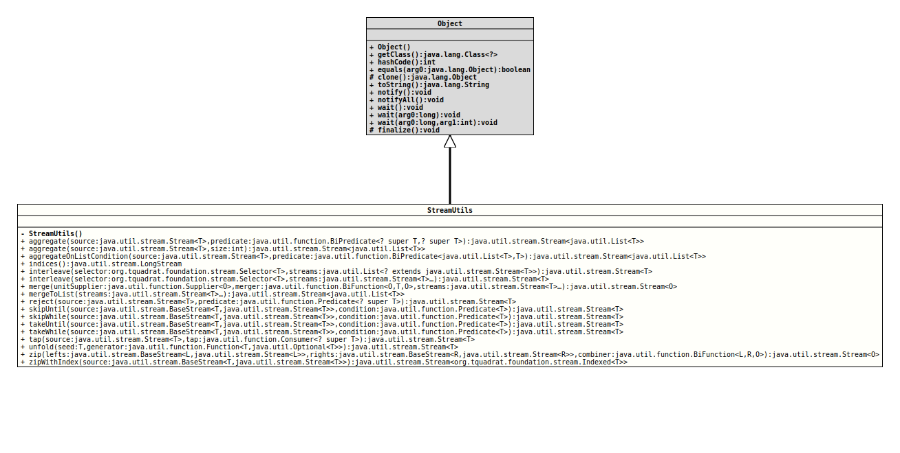

java.lang.Object
org.tquadrat.foundation.stream.StreamUtils
@UtilityClass
@ClassVersion(sourceVersion="$Id: StreamUtils.java 995 2022-01-23 01:09:35Z tquadrat $")
public final class StreamUtils
extends Object
Utility class providing static methods for performing various operations on
Streams.
- Author:
- Dominic Fox
- Modified by:
- Thomas Thrien (thomas.thrien@tquadrat.org)
- Version:
- $Id: StreamUtils.java 995 2022-01-23 01:09:35Z tquadrat $
- Since:
- 0.0.7
- UML Diagram
-

UML Diagram for "org.tquadrat.foundation.stream.StreamUtils"
{kind=link}
-
Constructor Summary
Constructors -
Method Summary
Modifier and TypeMethodDescriptionAggregates items from the source stream into a list of items with fixed size.aggregate(Stream<T> source, BiPredicate<? super T, ? super T> predicate) Aggregates items from source stream into list of items while supplied predicate istruewhen evaluated on previous and current item.
Can by seen as streaming alternative toCollectors.groupingBy()when source stream is sorted by key.aggregateOnListCondition(Stream<T> source, BiPredicate<List<T>, T> predicate) Aggregates items from source stream.static LongStreamindices()Constructs an infinite (although in practice bounded byLong.MAX_VALUE) stream of longs0, 1, 2, 3 ...for use as indices.static <T> Stream<T>interleave(Selector<T> selector, List<? extends Stream<T>> streams) Constructs a stream which interleaves the supplied streams, picking items using the supplied selector function.
The selector function will be passed an array containing one value from each stream, ornullif that stream has no more values, and must return the integer index of the value to accept.static <T> Stream<T>interleave(Selector<T> selector, Stream<T>... streams) Constructs a stream which interleaves the supplied streams, picking items using the supplied selector function.
The selector function will be passed an array containing one value from each stream, ornullif that stream has no more values, and must return the integer index of the value to accept.static <T,O> Stream<O> merge(Supplier<O> unitSupplier, BiFunction<O, T, O> merger, Stream<T>... streams) Constructs a stream which merges together values from the supplied streams, somewhat in the manner of the stream constructed byzip(java.util.stream.BaseStream, java.util.stream.BaseStream, java.util.function.BiFunction), but for an arbitrary number of streams and using a merger to merge the values from multiple streams into an accumulator.mergeToList(Stream<T>... streams) Constructs a stream which merges together values from the supplied streams into lists of values, somewhat in the manner of the stream constructed byzip(java.util.stream.BaseStream, java.util.stream.BaseStream, java.util.function.BiFunction), but for an arbitrary number of streams.static <T> Stream<T>Filters with the condition negated.static <T> Stream<T>skipUntil(BaseStream<T, Stream<T>> source, Predicate<T> condition) Constructs a stream which skips values from the source stream for as long as they do not meet the supplied condition, then streams every remaining value as soon as the first value is found which does meet the condition.static <T> Stream<T>skipWhile(BaseStream<T, Stream<T>> source, Predicate<T> condition) Constructs a stream which skips values from the source stream for as long as they meet the supplied condition, then streams every remaining value as soon as the first value is found which does not meet the condition.static <T> Stream<T>takeUntil(BaseStream<T, Stream<T>> source, Predicate<T> condition) Construct a stream which takes values from the source stream until one of them meets the supplied condition, and then stops.static <T> Stream<T>takeWhile(BaseStream<T, Stream<T>> source, Predicate<T> condition) Construct a stream which takes values from the source stream for as long as they meet the supplied condition, and stops as soon as a value is encountered which does not meet the condition.static <T> Stream<T>Taps a stream so that as each item in the stream is released from the underlying spliterator, it is also sent to the tap.static <T> Stream<T>Constructs a stream which takes the seed value and applies the generator to create the next value, feeding each new value back into the generator to create subsequent values.static <L,R, O> Stream<O> zip(BaseStream<L, Stream<L>> lefts, BaseStream<R, Stream<R>> rights, BiFunction<L, R, O> combiner) Zips together the "left" and "right" streams until either runs out of values.
Each pair of values is combined into a single value using the supplied combiner function.zipWithIndex(BaseStream<T, Stream<T>> source) Zips the source stream together with the stream of indices to provide a stream of indexed values.
-
Constructor Details
-
StreamUtils
private StreamUtils()No instance allowed for this class.
-
-
Method Details
-
aggregate
@API(status=STABLE, since="0.0.7") public static <T> Stream<List<T>> aggregate(Stream<T> source, BiPredicate<? super T, ? super T> predicate) Aggregates items from source stream into list of items while supplied predicate istruewhen evaluated on previous and current item.
Can by seen as streaming alternative toCollectors.groupingBy()when source stream is sorted by key. -
aggregate
@API(status=STABLE, since="0.0.7") public static <T> Stream<List<T>> aggregate(Stream<T> source, int size) Aggregates items from the source stream into a list of items with fixed size. -
aggregateOnListCondition
@API(status=STABLE, since="0.0.7") public static <T> Stream<List<T>> aggregateOnListCondition(Stream<T> source, BiPredicate<List<T>, T> predicate) Aggregates items from source stream. Similar toaggregate(Stream, BiPredicate), but uses different predicate, evaluated on all items aggregated so far and next item from source stream. -
indices
Constructs an infinite (although in practice bounded byLong.MAX_VALUE) stream of longs0, 1, 2, 3 ...for use as indices.- Returns:
- A stream of longs.
-
interleave
@API(status=STABLE, since="0.0.7") public static <T> Stream<T> interleave(Selector<T> selector, List<? extends Stream<T>> streams) Constructs a stream which interleaves the supplied streams, picking items using the supplied selector function.
The selector function will be passed an array containing one value from each stream, ornullif that stream has no more values, and must return the integer index of the value to accept. That value will become part of the interleaved stream, and the source stream at that index will advance to the next value.
See theSelectorsclass for ready-made selectors for round-robin and sorted item selection.- Type Parameters:
T- The type over which the interleaved streams stream.- Parameters:
selector- The selector function to use.streams- The streams to interleave.- Returns:
- An interleaved stream.
-
interleave
@API(status=STABLE, since="0.0.7") @SafeVarargs public static <T> Stream<T> interleave(Selector<T> selector, Stream<T>... streams) Constructs a stream which interleaves the supplied streams, picking items using the supplied selector function.
The selector function will be passed an array containing one value from each stream, ornullif that stream has no more values, and must return the integer index of the value to accept. That value will become part of the interleaved stream, and the source stream at that index will advance to the next value.
See theSelectorsclass for ready-made selectors for round-robin and sorted item selection.- Type Parameters:
T- The type over which the interleaved streams stream.- Parameters:
selector- The selector function to use.streams- The streams to interleave.- Returns:
- An interleaved stream.
-
merge
@API(status=STABLE, since="0.0.7") @SafeVarargs public static <T,O> Stream<O> merge(Supplier<O> unitSupplier, BiFunction<O, T, O> merger, Stream<T>... streams) Constructs a stream which merges together values from the supplied streams, somewhat in the manner of the stream constructed byzip(java.util.stream.BaseStream, java.util.stream.BaseStream, java.util.function.BiFunction), but for an arbitrary number of streams and using a merger to merge the values from multiple streams into an accumulator.- Type Parameters:
T- The type over which the merged streams stream.O- The type of the accumulator, over which the constructed stream streams.- Parameters:
unitSupplier- Supplies the initial "zero" or "unit" value for the accumulator.merger- Merges each item from the collection of values taken from the source streams into the accumulator value.streams- The streams to merge.- Returns:
- A merging stream.
-
mergeToList
@API(status=STABLE, since="0.0.7") @SafeVarargs public static <T> Stream<List<T>> mergeToList(Stream<T>... streams) Constructs a stream which merges together values from the supplied streams into lists of values, somewhat in the manner of the stream constructed byzip(java.util.stream.BaseStream, java.util.stream.BaseStream, java.util.function.BiFunction), but for an arbitrary number of streams.- Type Parameters:
T- The type over which the merged streams stream.- Parameters:
streams- The streams to merge.- Returns:
- A merging stream of lists of
T.
-
reject
@API(status=STABLE, since="0.0.7") public static <T> Stream<T> reject(Stream<T> source, Predicate<? super T> predicate) Filters with the condition negated. Will throw away any members of the source stream that match the condition.- Type Parameters:
T- The type over which the stream streams.- Parameters:
source- The source stream.predicate- The filter condition.- Returns:
- A rejecting stream.
-
skipUntil
@API(status=STABLE, since="0.0.7") public static <T> Stream<T> skipUntil(BaseStream<T, Stream<T>> source, Predicate<T> condition) Constructs a stream which skips values from the source stream for as long as they do not meet the supplied condition, then streams every remaining value as soon as the first value is found which does meet the condition.- Type Parameters:
T- The type over which the stream streams.- Parameters:
source- The source stream.condition- The condition to apply to elements of the source stream.- Returns:
- An element-skipping stream.
-
skipWhile
@API(status=STABLE, since="0.0.7") public static <T> Stream<T> skipWhile(BaseStream<T, Stream<T>> source, Predicate<T> condition) Constructs a stream which skips values from the source stream for as long as they meet the supplied condition, then streams every remaining value as soon as the first value is found which does not meet the condition.- Type Parameters:
T- The type over which the stream streams.- Parameters:
source- The source stream.condition- The condition to apply to elements of the source stream.- Returns:
- An element-skipping stream.
-
takeUntil
@API(status=STABLE, since="0.0.7") public static <T> Stream<T> takeUntil(BaseStream<T, Stream<T>> source, Predicate<T> condition) Construct a stream which takes values from the source stream until one of them meets the supplied condition, and then stops.- Type Parameters:
T- The type over which the stream streams.- Parameters:
source- The source stream.condition- The condition to apply to elements of the source stream.- Returns:
- A condition-bounded stream.
-
takeWhile
@API(status=STABLE, since="0.0.7") public static <T> Stream<T> takeWhile(BaseStream<T, Stream<T>> source, Predicate<T> condition) Construct a stream which takes values from the source stream for as long as they meet the supplied condition, and stops as soon as a value is encountered which does not meet the condition.- Type Parameters:
T- The type over which the stream streams.- Parameters:
source- The source stream.condition- The condition to apply to elements of the source stream.- Returns:
- A condition-bounded stream.
-
tap
@API(status=STABLE, since="0.0.7") public static <T> Stream<T> tap(Stream<T> source, Consumer<? super T> tap) Taps a stream so that as each item in the stream is released from the underlying spliterator, it is also sent to the tap.- Type Parameters:
T- The type over which the stream streams.- Parameters:
source- The source stream.tap- The tap which will consume each item that passes through the stream.- Returns:
- A tapped stream.
-
unfold
@API(status=STABLE, since="0.0.7") public static <T> Stream<T> unfold(T seed, Function<T, Optional<T>> generator) Constructs a stream which takes the seed value and applies the generator to create the next value, feeding each new value back into the generator to create subsequent values. If the generator returnsOptional.empty(), then the stream has no more values.- Type Parameters:
T- The type over which the stream streams.- Parameters:
seed- The seed value.generator- The generator to use to create new values.- Returns:
- An unfolding stream.
-
zip
@API(status=STABLE, since="0.0.7") public static <L,R, Stream<O> zipO> (BaseStream<L, Stream<L>> lefts, BaseStream<R, Stream<R>> rights, BiFunction<L, R, O> combiner) Zips together the "left" and "right" streams until either runs out of values.
Each pair of values is combined into a single value using the supplied combiner function.- Type Parameters:
L- The type over which the "left" stream is streaming.R- The type over which the "right" stream is streaming.O- The type created by the combiner out of pairs of "left" and "right" values, over which the resulting stream streams.- Parameters:
lefts- The "left" stream to zip.rights- The "right" stream to zip.combiner- The function to combine "left" and "right" values.- Returns:
- A stream of zipped values.
-
zipWithIndex
@API(status=STABLE, since="0.0.7") public static <T> Stream<Indexed<T>> zipWithIndex(BaseStream<T, Stream<T>> source) Zips the source stream together with the stream of indices to provide a stream of indexed values.- Type Parameters:
T- The type over which the source stream is streaming.- Parameters:
source- The source stream.- Returns:
- A stream of indexed values.
-